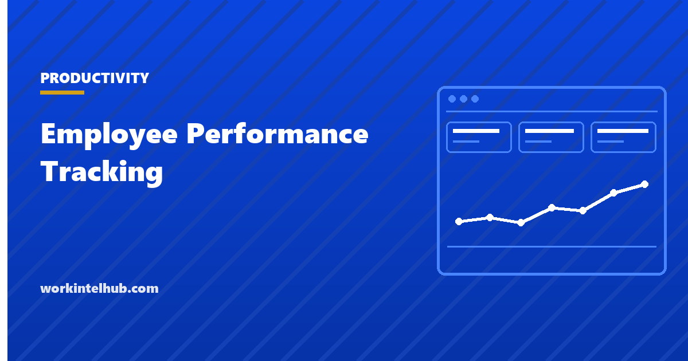

Employee Performance Tracking

Employee performance tracking is the practice of collecting evidence about how well people are doing their work, so decisions about pay, promotion, coaching and workload rest on something other than the manager's memory of the last three weeks. That is the case for it, and it is a good one.
The difficulty is that measurement changes behaviour. Anything you track and then reward stops describing performance and starts describing what people do to score well on it. This page covers what survives that pressure, what does not, and how to tell which you are looking at.
The problem every system runs into
Goodhart's Law is the compact version: when a measure becomes a target, it stops being a good measure. It is not a warning about bad employees. It describes what reasonable people do when their standing depends on a number they can influence directly.
Counts are the most vulnerable because they are the easiest to inflate without doing anything wrong. Tickets get split into smaller tickets. Commits get made more often and smaller. Calls get shortened at the point the customer needed more time. None of that is cheating, and all of it degrades the number. Our piece on why productivity metrics fail covers how each one breaks in practice.
The practical rule that follows: track many things loosely rather than one thing tightly, and keep the measures you use for coaching separate from the measures you use for pay.
Nine measures, ranked by how easily they are gamed
Ordered from most robust to least. The last three still have uses, but not as targets.
| Measure | What it tells you | How it is gamed |
|---|---|---|
| Outcome delivered | Whether the work achieved its purpose | Hard to game, slow to observe |
| Quality signals | Rework, defects, complaints, escalations | Under-reporting, if reporting is punished |
| Predictability | Whether commitments land when promised | Padding estimates |
| Peer and stakeholder feedback | Contribution that no system records | Popularity, reciprocity |
| Cycle time | How long work takes end to end | Splitting work into smaller pieces |
| Goal progress | Movement against something agreed in advance | Setting easy goals |
| Throughput counts | Volume of items completed | Trivially, by shrinking the item |
| Hours logged | Time present, not work done | Trivially |
| Activity scores | Keyboard and mouse intensity | Trivially, and it penalises thinking |
The bottom three are what most monitoring software sells, and they sit at the bottom for a reason. An activity score rewards visible motion and penalises reading, planning and time on the phone, which is most of what senior work looks like.
Use a framework rather than a single number
Both widely used engineering frameworks exist because single numbers do not survive contact with knowledge work. DORA measures delivery through four indicators that pull against each other, so improving one at the expense of the rest shows up immediately. SPACE deliberately spans satisfaction, performance, activity, communication and efficiency for the same reason.
You do not need either by name. You need the property they share: several measures that constrain each other, so that gaming one becomes visible in another. Shipping faster while defects climb is not an improvement, and a single throughput number would have called it one.
Once you have chosen the measures, the reporting format decides whether anyone acts on them. Our productivity report template covers the structure and the four numbers worth carrying.
How often to look
Weekly for the team, quarterly for the individual, and never in a way that surprises anyone.
Weekly team-level review catches drift while it is still cheap. Individual review needs a longer window because knowledge work is lumpy: a fortnight of apparently low output is frequently one hard problem being solved. Judging that fortnight on its own produces the wrong answer confidently.
Let people see their own record first, in full, before it is discussed. That single practice changes how tracking is received more than any choice of metric, because it makes the system something a person can use rather than something applied to them.
Where monitoring software fits, and where it does not
Activity monitoring answers where time went. That is genuinely useful for diagnosis, and it is not a performance measure. The gap between those two sentences is where most of this goes wrong.
If you are considering a tool, write the question down first, then check whether the tool answers it. Our comparison of the best employee monitoring software covers what each product actually collects, and the ethical playbook covers the tests a proposal should pass before anything is switched on.
Be aware of what it costs in trust. Pew Research Center found in 2023 that 51% of US adults oppose employers recording what people do on their work computers, and that 81% believe workers would feel inappropriately watched if employers collected and analysed information about how they do their jobs. That cost lands on day one; any benefit arrives slowly.
The measure most systems leave out
Gallup reported in April 2026 that global engagement declined for a second consecutive year and reached its lowest level since 2020, with the decline most acute among managers. A tracking system that measures only individual contributors is measuring the half of the problem that is easier to see.
The American Psychological Association's 2024 Work in America survey, conducted by The Harris Poll among 2,027 employed US adults, found 43% report lower psychological safety at work, and that those workers are about ten times more likely to describe their workplace as toxic. Performance data collected in that environment measures fear as much as capability, which is worth knowing before acting on it.
Key takeaways
- Anything you track and reward stops describing performance and starts describing how people score well on it.
- Outcomes, quality signals and predictability survive that pressure. Throughput counts, hours logged and activity scores do not.
- Use several measures that constrain each other, so gaming one shows up in another. That is the property DORA and SPACE share.
- Weekly at team level, quarterly for individuals. Knowledge work is lumpy and short windows produce confident wrong answers.
- Let people see their own record in full before it is discussed. It changes reception more than the choice of metric.
- Activity monitoring tells you where time went. That is diagnosis, not performance measurement.
- Gallup found the 2025 engagement decline was sharpest among managers, who are the layer most tracking systems never measure.
Frequently asked questions
What is the best way to track employee performance?
Combine an outcome measure, a quality signal and a predictability measure, and review them together rather than separately. Any single number can be improved at the expense of the other two, which is exactly what happens when one is used alone.
What metrics should I use for employee performance tracking?
Outcomes delivered, quality signals such as rework and escalations, whether commitments land when promised, and stakeholder feedback. Throughput counts, hours logged and activity scores are the easiest to inflate and the least informative about actual performance.
How often should performance be reviewed?
Weekly at team level and quarterly for individuals. Knowledge work is uneven, and a fortnight of apparently low output is frequently one difficult problem being solved. A short review window judges that fortnight on its own and gets it wrong.
Does monitoring software measure performance?
No. It measures activity, which is where time went rather than what the time produced. That is useful for diagnosing a specific problem you have written down in advance. Used as a performance measure it rewards visible motion and penalises thinking.
How do I track performance for remote employees?
The same way as anyone else. Location changes what you can observe informally, not what is worth measuring. The one addition is writing decisions down, because remote teams lose more time waiting for answers than to anyone working less.
Should performance tracking feed into pay decisions?
Keep the measures used for coaching separate from the measures used for pay. As soon as a number determines compensation it comes under pressure to be optimised, and it stops being useful for the conversation about how the work is going.
What does Goodhart's Law mean for performance tracking?
That once a measure becomes a target it stops being a good measure. It is a description of how reasonable people behave when their standing depends on a number they can influence, not an accusation about bad employees. The practical response is to track several things loosely rather than one thing tightly.